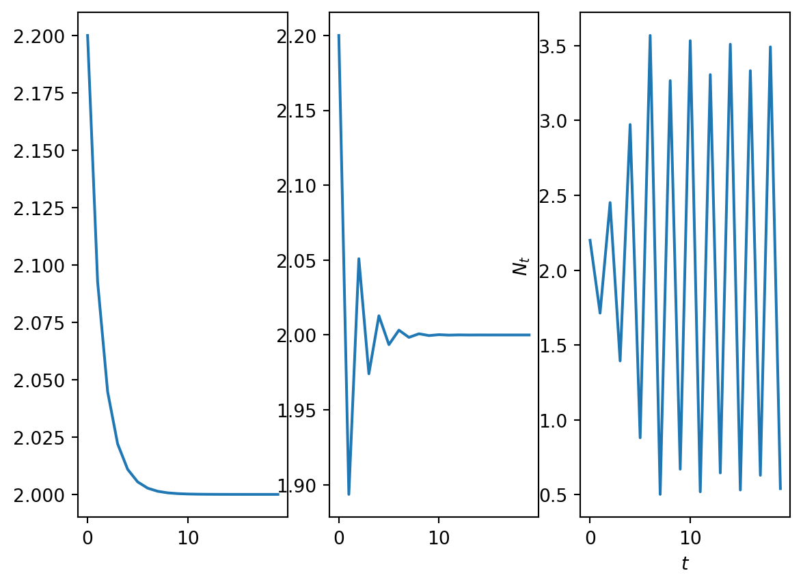

Consider the first order difference equation \[
N_{t+1}=N_tf(N_t)=H(N_t),
\tag{1}\] where \(f(N_t)\) is a function that defines the per capita growth rate. The function \(H(N_t)\) describes the total (net) growth rate.
The Malthusian model
The Ricker model
\[
N_{t+1}=N_te^{r(1-\frac{N_t}{K})}.
\]
Code
import numpy as npimport matplotlib.pyplot as pltr_1=0.5r_2=1.5r_3=2.5K=2.0T=20t = np.arange(0, T, 1)N_1 = np.zeros_like(t,dtype=float)N_2 = np.zeros_like(t,dtype=float)N_3 = np.zeros_like(t,dtype=float)def rhs(x,par): r=par[0] K=par[1] f=x*np.exp(r*(1-x/K))return fdef SolveSingleDiff(t,rhs,N_0,par): N = np.zeros_like(t,dtype=float) N[0]=N_0for i in t:if i>0: N[i]=rhs(N[i-1],par) return N N_0=2.2N_1=SolveSingleDiff(t,rhs,N_0,[r_1,K])N_2=SolveSingleDiff(t,rhs,N_0,[r_2,K])N_3=SolveSingleDiff(t,rhs,N_0,[r_3,K])fig, ax = plt.subplots(1,3)ax[0].plot(t, N_1)plt.xlabel('$t$')plt.ylabel('$N_t$')ax[1].plot(t, N_2)plt.xlabel('$t$')plt.ylabel('$N_t$')ax[2].plot(t, N_3)plt.xlabel('$t$')plt.ylabel('$N_t$')plt.show()

Figure 1: A plot of numerical solutions of the Ricker model. (a)r=0.5. (b) r=1.5. (c) r=2.5.
Steady state calculation
Compute the steady states of the system of ODEs \[
\begin{aligned}
\frac{du}{dt}&=1-u, \nonumber \\
\frac{dv}{dt}&=1-uv-v.
\end{aligned}
\]
Suppose \((u^*,v^*)\) is a steady state. Hence \[
0=1-u^*
\] and \[
0=1-u^*v^*-v^*
\] The steady state is \((1,1/2)\).
Linear stability calculation
Deduce, by considering the form for the eigenvalues that, for example, the conditions \(\det(A)>0\), \(\mathrm{tr}(A)>0\) with \(\mathrm{tr}(A)^2<4 \det(A)\) imply that the steady state is an unstable spiral.
The eigenvalues are given by \[
\lambda = \frac{\mathrm{tr}{A}\pm \sqrt{\mathrm{tr}{A}^2-4\det{A}}}{2}
\]
Jacobian calculation
Compute the Jacobian matrix for the system of ODEs \[
\begin{aligned}
\frac{du}{dt}&=1-u, \nonumber \\
\frac{dv}{dt}&=1-uv-v.
\end{aligned}
\] Evaluate the Jacobian matrix at the steady state and hence determine its linear stability.
The Jacobian is given by \[
A=\left(\begin{array}{rr} -1&0 \\ -v &-u-1 \end{array}\right).
\] At (1,1/2) \[
A=\left(\begin{array}{rr} -1&0 \\ -\frac{1}{2} &-2 \end{array}\right).
\] In this case \[
tr(A)=-3
\] and \[
\det(A)=2
\]
Hence the steady state is stable. As \[
tr(A)^2-4\det(A)=9-8=1,
\] it is a stable node.
Nullclines calculation
Sketch the nullclines of the system of ODEs \[
\begin{aligned}
\frac{du}{dt}&=1-u, \nonumber \\
\frac{dv}{dt}&=1-uv-v.
\end{aligned}
\]
The \(u\) nullcline is \(u=1\). The \(v\) nullcline is \(v=1/(1+u)\).
Biochemical kinetics I
Suppose A and B react to produce C. Hence \[
A+B\xrightarrow{k} C.
\]
The law of mass action states that the rate of the reaction is
\[
k[A][B].
\]
Using the reaction rates, we write down ordinary differential equations that describe how concentrations of a given molecule will change in time. Hence
\[
\frac{d[C]}{dt}=k[A][B].
\]
Biochemical kinetics
Consider the reversible reaction \[
A+B \xrightleftharpoons[k_{-}]{k_{+}} C.
\] Define dependent variables, identify reaction rates and derive ordinary differential equations that describe how concentrations evolved in time.
For a given set of initial conditions, \[
[A](t=0)=[A]_0, \ \ \ [B](t=0)=[B]_0, \ \ \ [C](t=0)=[C]_0,
\] the ODEs can be solved and hence the concentrations of the different molecules described as time evolves.